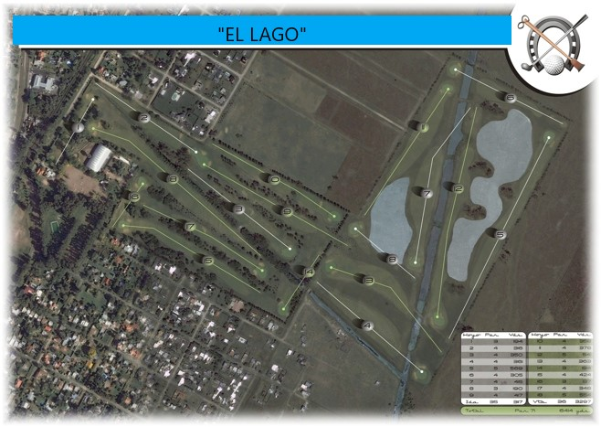

Secciones de la WEB.


Visita Virtual
Recorriendo el Driving
Al ingresar podemos apreciar un deck de madera en el que los visitantes pueden relajarse y disfrutar de charlas con amigos acompañados de algun aperitivo del bar. En el bar nos devemos notificar del ingreso y solicitar las canastas de 50 pelotas para realizar las prácticas. Se realizan prestamos de palos para práctica y alquiler de carros para el campo. La zona de práctica consta de un area extensa para un total de 12 jugadores y con una amplitud de mas de 400 yardas para practicar golpes a distancia. En un extremo de la zona de practica proximos al bar y deck se encuentra un green con multiples hoyos y un baunker para practicar tiros cortos.


Conociendo la cancha
Nuestro campo de juego consta de un total de 9 hoyos distribuidos con notable precisión para ofrecer los desafios mas cautivadores en un hambiente tranquilo y relajado. La naturaleza se hace presente en cada rincón, activando todos los sentidos para transformar el momento en una experiencia enrriquecedora para el jugador.
Imagen aerea
HOYO 1
Se inicia con un hoyo de precalentamiento par 3 de 194 yardas. Su distancia permite aproximar al green con un certero golpe de straight de hierro 7. La dificultad la dominan la estrechez de su fairway y los dos banquers protectores proximos a un green con caida sur.
HOYO 2
Hora de desenfundar el Drive para aproximar las 300 Ydas. de recorrido, acompañando el cause del primer arroyo que encontramos a la derecha del fairway. Un desvio a la izquierda puede resultar en un impacto directo a la calle lateral a escasos 3 metros. Al llegar al hoyo nos encontramos con trés bunkers ubicados estratégicamente para dejar un delgado pasillo de verde en el centro del green.
HOYO 3
La palmera central es la protagonista de este hoyo que junto a la arboleda a ambos extremos del fairway y el arroyo que corre a la derecha hacen de la vista un paisaje soñado. El primer desafio es atravesar la palmera evitando caer en el banquer de media distancia y de quedar atrapado por los helechos que decoran el fairway. Con un buen segundo golpe nos adentrariamos en un green rodeado por dos banquers laterales.
-
- Profesionales:
194 Ydas. - Principiantes:
187 Ydas. - Damas:
179 Ydas.
Hoyo 1
- Profesionales:
-
- Profesionales:
316 Ydas. - Principiantes:
313 Ydas. - Damas:
278 Ydas.
Hoyo 2
- Profesionales:
-
- Profesionales:
350 Ydas. - Principiantes::
325 Ydas. - Damas:
264 Ydas.
Hoyo 3
- Profesionales:


HOYO 4
Un hoyo con fuera de límites a la derecha y forestación en crecimiento a la izquierda. No es un hoyo fácil de abordar siendo su máxima complicación el viento dominante y el canal que cruza a pocas yardas del green. Los prudentes juegan el drive o la madera 3 y luego un pitch antes del agua para luego jugar al green que cuenta con las mismas características que las del viejo recorrido. Es casi plano y con bunkers playos en ambos lados.
HOYO 5
Es un par 5 de 534 yardas que cuenta con montes a la izquierda. El primero de ellos a unas 200 yardas de la salida y el otro a unas 180 yardas del green. Estos montes molestan si tiene tendencia al excesivo draw.
Es un hoyo recto, no muy ancho, con fuera de límite sobre la derecha en toda su extensión Como si esto fuera poco, hazard sobre la izquierda. El green es amplio con mucho movimiento defendido por un bunker a la derecha. No necesita más.
HOYO 6
Si lo juega por primera vez le parecerá fácil. Desde el tee no se alcanza a percibir todo lo que encierra. Tiene 300 yardas , de par 4, fuera de límite a la derecha y próximo al centro del fairway, sobre la izquierda, un hazard y un monte en la cercanía de las 100 yardas . La otra dificultad es un canal que cruza a unas 15 yardas del ante green. El green tiene la forma de una L invertida, con mucho movimiento desde el fondo hacia el frente. Detrás y a la derecha, muy cerca, fuera de límite. El green está defendido por bunkers laterales.
-
- Profesionales:
361 Ydas. - Principiantes:
356 Ydas. - Damas:
309 Ydas.
Hoyo 4
- Profesionales:
-
- Profesionales:
569 Ydas. - Principiantes:
534 Ydas. - Damas:
493 Ydas.
Hoyo 5
- Profesionales:
-
- Profesionales:
305 Ydas. - Principiantes:
300 Ydas. - Damas:
267 Ydas.
Hoyo 6
- Profesionales:
HOYO 7
Si lo juega por primera vez le parecerá fácil. Desde el tee no se alcanza a percibir todo lo que encierra. Tiene 300 yardas , de par 4, fuera de límite a la derecha y próximo al centro del fairway, sobre la izquierda, un hazard y un monte en la cercanía de las 100 yardas . La otra dificultad es un canal que cruza a unas 15 yardas del ante green. El green tiene la forma de una L invertida, con mucho movimiento desde el fondo hacia el frente. Detrás y a la derecha, muy cerca, fuera de límite. El green está defendido por bunkers laterales.
HOYO 8
En principio por su distancia la que varía de las 170 a las 195 yardas , porque está sobre elevado muy por encima de los tres metros sobre el nivel del fairway, porque sobre su derecha ingresa una laguna. A estas dificultades se le suman los profundos bunkers que defienden el green. Este hoyo exige golpes justos y de errar es mejor hacerlo por la izquierda Una pelota pasada significa un desafío mayor ya que deberá ejecutar un tiro a ciegas a favor de la pendiente. El par no es posible pero si concreta un bogey puede considerarlo como bueno.
HOYO 9
Cuenta con un cross bunker a unas 300 yardas de la salida. Una alternativa razonable es un tiro de 200 yardas asegurando una salida al centro y desde allí jugar un tiro al green con hierro largo o madera. Esta opción es una de las más aceptadas por la mayoría de los jugadores. Facilitando el acceso al green, encontrará una zona de buena y densa pastura. El green se encuentra pegado al del Hoyo 2, es amplio y su defensa consiste en un bunker sobre el lado derecho.
-
- Profesionales:
415 Ydas. - Principiantes:
398 Ydas. - Damas:
367 Ydas.
Hoyo 7
- Profesionales:
-
- Profesionales:
190 Ydas. - Principiantes:
169 Ydas. - Damas:
136 Ydas.
Hoyo 8
- Profesionales:
-
- Profesionales:
417 Ydas. - Principiantes:
377 Ydas. - Damas:
337 Ydas.
Hoyo 9
- Profesionales: